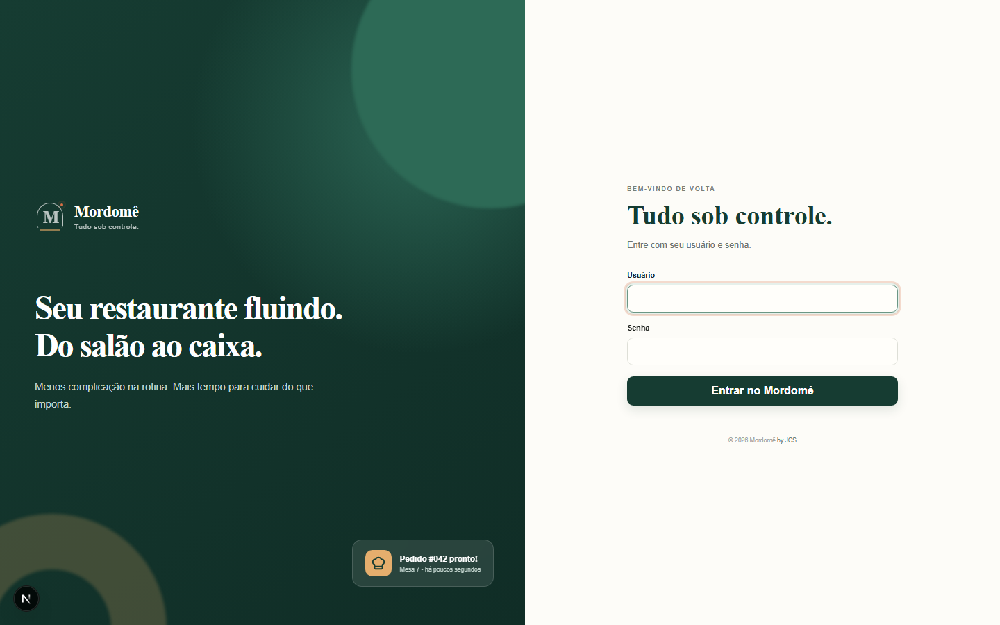
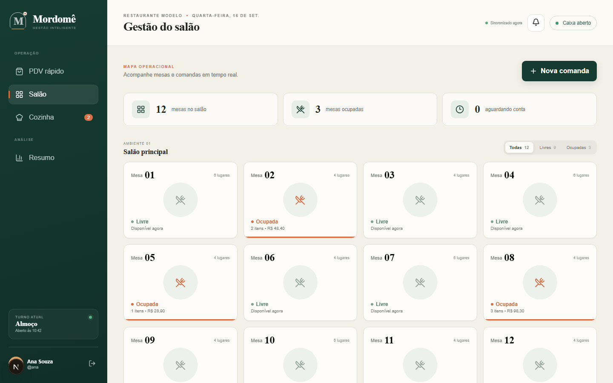

PDV e cardápio por canal.
Cadastre produtos, preços e disponibilidade para PDV e salão. Faça vendas de balcão sem mesa ou comanda, com seleção da forma de pagamento e vínculo ao caixa do operador.
01 / GESTÃO DE BARES E RESTAURANTES
Chega de planilha improvisada e comanda de papel. O Mordomê acompanha o salão, a cozinha, o caixa e o estoque em tempo real — para você saber na hora o que está vendendo bem, o que está faltando e quanto sobra no fim do turno.
REVISÃO 06 · CÓDIGO E CATÁLOGO FUNCIONAL CONSULTADOS
TELAS REAIS DO PRODUTO
Capturas do código-fonte consultado, sem edição de conteúdo ou dados fictícios de marca.


RECURSOS DA SOLUÇÃO
Atendimento, produção e controle: recursos registrados como implementados no catálogo funcional consultado.
Cadastre produtos, preços e disponibilidade para PDV e salão. Faça vendas de balcão sem mesa ou comanda, com seleção da forma de pagamento e vínculo ao caixa do operador.
Abra a comanda, lance itens, envie rodadas à cozinha e acompanhe recebido, em preparo, pronto e entregue. O fechamento da conta libera a mesa e preserva os registros da operação.
Cadastre insumos, registre entradas com conversão de unidades e defina a quantidade usada em cada receita. A venda registra o consumo dos ingredientes associados ao produto.
Acompanhe abertura, suprimentos, sangrias, conferência por forma de pagamento e fechamento. As diferenças apuradas ficam registradas junto ao movimento do caixa.
Organize estabelecimentos, usuários e perfis de acesso. Cada pessoa trabalha nas unidades permitidas, com permissões ajustadas ao seu papel na operação.
Consulte registros de vendas, cancelamentos, caixa, estoque e cadastros, com responsável e horário. A consulta do histórico depende da permissão de acesso.
Registre pedidos de delivery, acompanhe o status até a entrega e atribua um entregador, com rastreio em mapa.
Feche a conta com mais de uma forma de pagamento na mesma venda, com cálculo automático do troco.
UM EXEMPLO DE FICHA TÉCNICA
O estoque trabalha na unidade-base. Neste exemplo ilustrativo, uma entrada de 1 kg corresponde a 1.000 g, e a receita de um produto utiliza 200 g a cada venda.
Simulação matemática. Não acessa o sistema nem movimenta estoque real.
ANTES DE CONTINUAR
Escopo, limites e próximos passos para conhecer a solução.
Sim. O produto foi desenvolvido para essa operação, com PDV, salão, comandas, cozinha, caixa e controle de insumos. O escopo da implantação deve ser alinhado com a Jordão.
A ficha técnica informa a quantidade em gramas, mililitros ou unidades usada por produto. O catálogo funcional registra a baixa automática na venda. O exemplo desta página é apenas uma simulação matemática, sem conexão a um estoque real.
A operação híbrida com servidor local e sincronização, chamada Mordomê Continuidade, está documentada como proposta futura. Esta página não anuncia funcionamento offline como recurso disponível.
Delivery com rastreio e pagamento dividido já fazem parte da solução. A atualização da cozinha por push segue como planejada; hoje a fila é atualizada por consulta. Consulte o escopo disponível para a sua implantação.
O PRÓXIMO PASSO É UMA CONVERSA
Você revisa a mensagem antes de abrir o WhatsApp ou o e-mail da Jordão.